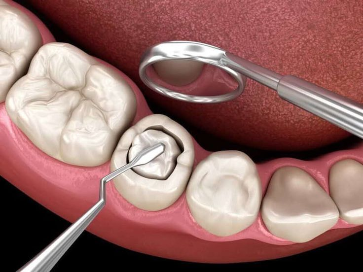
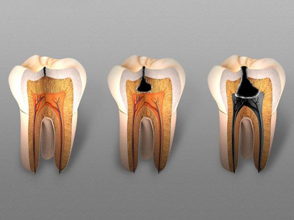

Tambal Gigi
Perawatan untuk menutup gigi berlubang demi mengembalikan fungsi kunyah dan kenyamanan


Kenapa Tambal Gigi di Klinik Kami?
Presisi
Tambalan dibentuk sesuai struktur gigi agar nyaman saat digunakan.
Daya Rekat Kuat
Teknik bonding optimal untuk ketahanan dan meminimalkan celah.
Steril & Aman
Prosedur dilakukan sesuai standar medis dan protokol kebersihan.
Katalog Produk Tambal


FAQ Tambal Gigi
Apakah tambal gigi sakit?
Menggunakan anestesi lokal bila diperlukan.
Berapa lama tindakan?
Sekitar 30–60 menit tergantung kasus.
Berapa lama ketahanannya?
Bisa bertahan bertahun-tahun dengan perawatan yang baik.